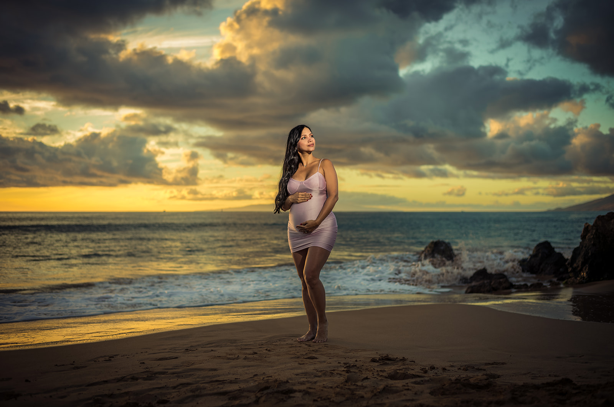

MAUI MATERNITY & BABYMOON PHOTOGRAPHY
Before everything changes.
A quiet celebration of who you are now and the family you are becoming.
A BEAUTIFUL, FLEETING SEASON
Held in Maui light.
Your babymoon is one of the last pauses before a new life begins. We create an unhurried space to celebrate it—with elegant direction, natural connection and photographs made to become part of your child’s story.
Choose the fresh color of sunrise or the warmth and drama of sunset.
Schedule Your Session NowComfort-led guidancePoses and movement are adapted around how you feel on the day.
Outfit change optionThe Babymoon Maternity Experience allows time to create two distinct looks.
Partners and family welcomeWe photograph motherhood and the connection surrounding it.



professionally edited photographs included in your babymoon archive.
High Resolution · Full Print Rights · Hand Edited
CELEBRATE THIS CHAPTER
One day, you’ll show them.
Reserve your Maui babymoon session at sunrise or sunset.
View Babymoon Sessions